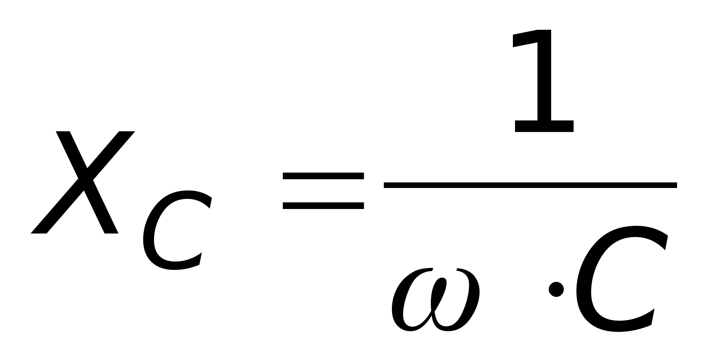

Конденсатор в цепи переменного тока выступает в роли сопротивления, в отличии от цепи постоянного тока (там ток протекать не будет).
Сопротивление, которое генерируется конденсатором называется емкостным сопротивлением. Считается оно по формуле:
 , где ω - циклическая частота переменного тока, C - емкость конденсатор, Xc - емкостное сопротивление.
На схеме продемонстрированы 3 электрические цепи переменного тока с различной емкостью конденсаторов. На осциллографах можно посмотреть графики силы тока электрической цепи в зависимости от емкости конденсатора.